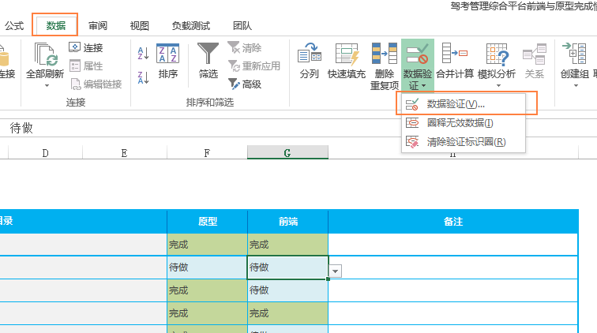
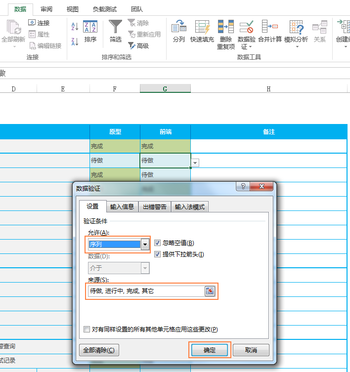
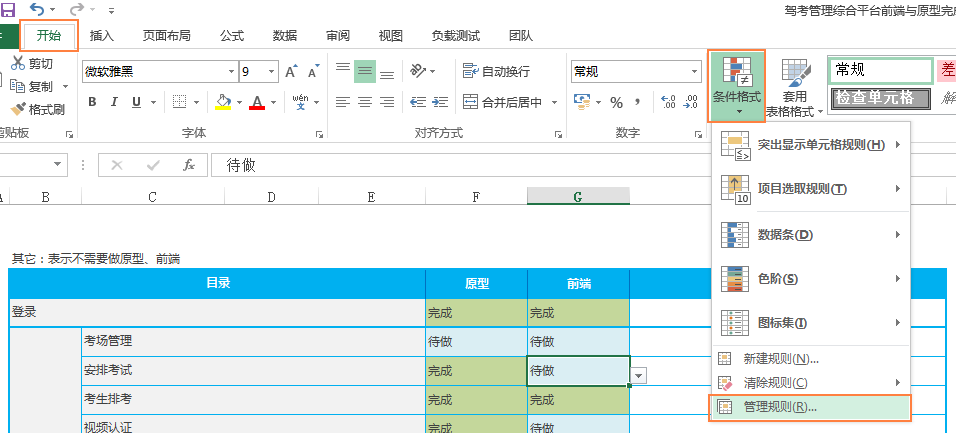
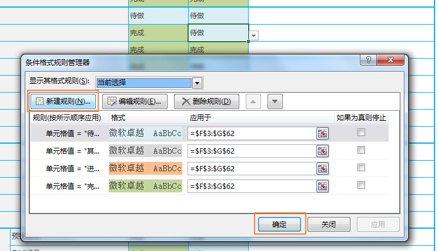
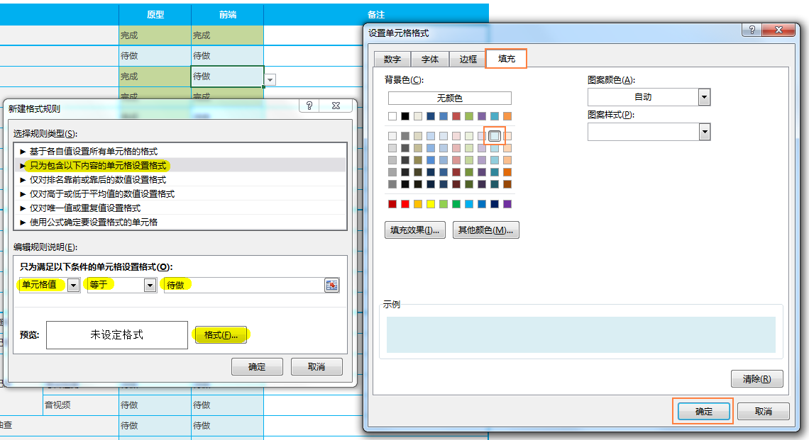
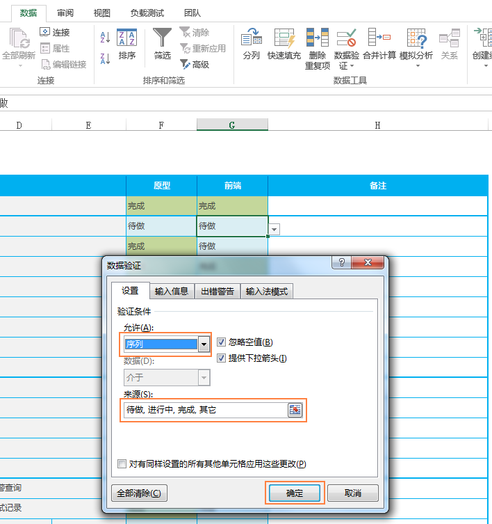

EXCEL2013
步骤
-
设置下拉框：【数据 > 数据验证】
在“来源”中输入数据时，要以半角逗号隔开
点击上图中的“确定”后，下拉框设置完成
-
为下拉框添加样式：【开始 > 条件格式 > 管理规则】  
按以上步骤，根据单元格的值，为下拉框的每个选项分别设置一个规则，还可以删除和修改规则。
EXCEL2013
在“来源”中输入数据时，要以半角逗号隔开
点击上图中的“确定”后，下拉框设置完成
按以上步骤，根据单元格的值，为下拉框的每个选项分别设置一个规则，还可以删除和修改规则。